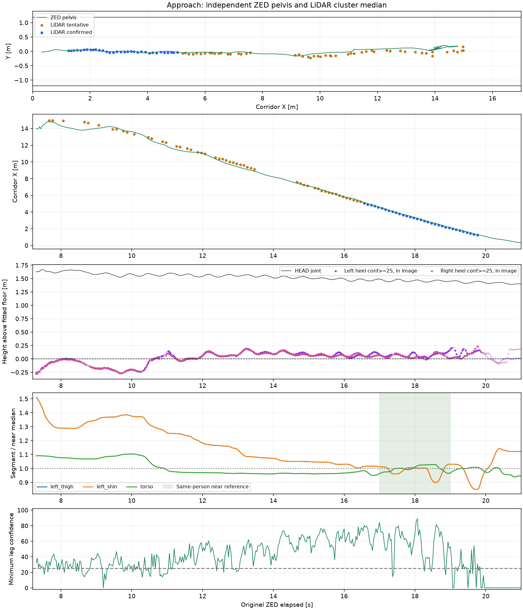
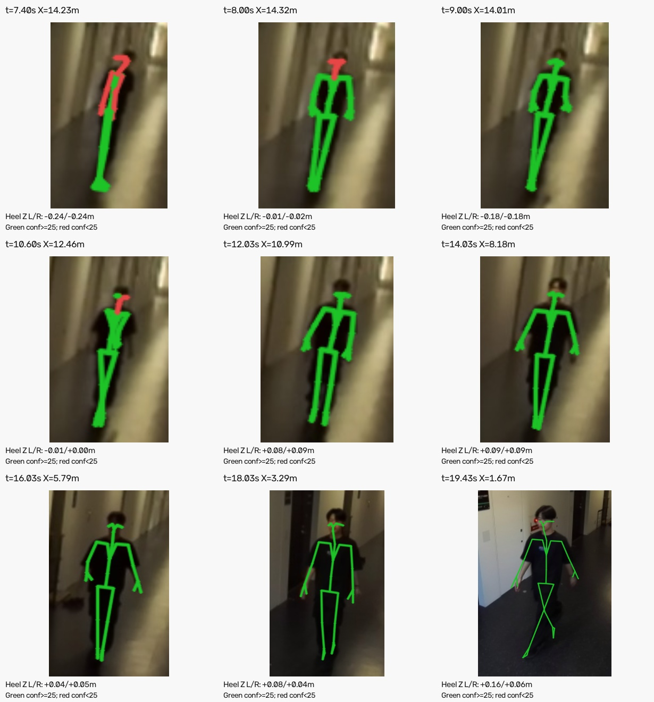

2026-10-22 / group003 / recording002 / SDK実行 15:05:30
遠方ではかかとが推定床面より最大約28 cm下に入り、脚長は近距離の約1.5倍になる区間がありました。脚長の変動は元のSDK座標に既にあり、廊下座標への変換で生じたものではありません。
条件・根拠・制限の詳細 ／ 集計数値 ／ センサー対応CSV ／ 前段のLiDAR確認
| 項目 | 結果 |
|---|---|
| 接近区間 | 原録画7.199〜20.999秒、フレーム216〜629 |
| 処理済み | 414 / 414フレーム |
| SDK状態OKの骨格 | 411 / 414（99.3%）、全てID 0。先頭3フレームのみ骨格なし |
| 両脚6関節がconfidence ≥25かつ画像内 | 307 / 414（74.2%） |
| ZED骨盤の横位置 | 廊下中央から−0.160〜＋0.209 m |
| 確定LiDAR33組との位置差の絶対値中央値 | 廊下方向6.6 cm、横方向1.7 cm。近距離・異なる代表点間の差であり、測位誤差ではない |
SDKの出力率・confidenceは関節精度の保証ではありません。時計差、廊下端を基準とする原点、センサー間の廊下方向の並進は引き続き未確定です。

骨長比の基準は今回の同じ人物の17〜19秒の中央値です。身体寸法の真値ではありません。床下のかかとはconfidence ≥25かつ画像内の点でも存在します。終端では足が画角外へ出て信頼度が低下します。

緑は両端の関節confidence ≥25、赤はそれ未満。画像は拡大表示で、実際の遠方の人物に含まれる画素数は少ない状態です。画面上の対応だけで3Dの足の高さ・脚長が正しいとは判断しません。
保存された廊下座標CSVと独立計算は一致し、別経路で合成した変換との差も丸め誤差の範囲でした。大まかな歩行経路の確認には使えます。15 m付近からの関節高・歩幅・関節角の定量測定には、校正とSDK関節推定の追加確認が必要です。
今回の処理では校正・骨格の尺度・位置・時計offsetを調整していません。元のSDK出力と再生も保持しています。